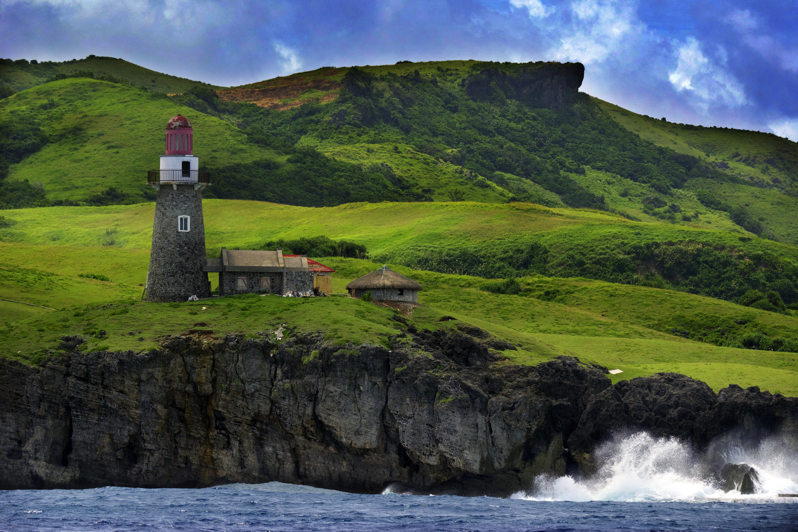
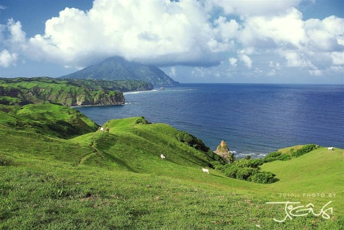
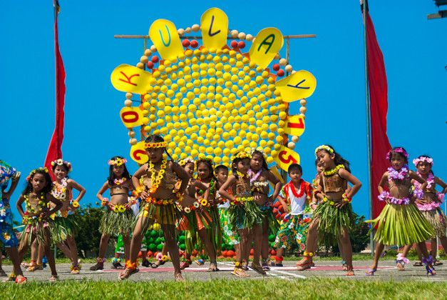
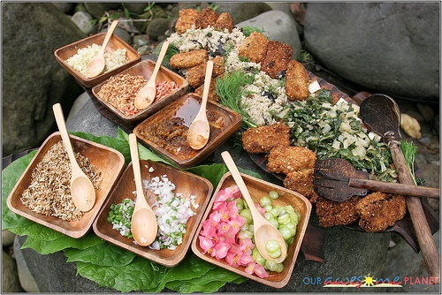

Discover the northernmost province of the Philippines — where the wind, sea, and history come together.
Explore Destinations
Rolling hills, boulder beaches, stone villages, and lighthouses waiting to be explored.
View Destinations
Colorful festivals, traditional crafts, and Ivatan customs passed down through generations.
View Festivals
Taste unique Ivatan dishes like Uvud Balls, Lunis, and fresh flying fish from the sea.
View FoodBatanes is unlike any other province in the Philippines. Its landscapes look almost European — rolling green hills, stone houses, and dramatic coastlines — yet it has a deeply Filipino soul rooted in Ivatan culture and tradition.
The province is known for its peaceful atmosphere, honest people, and incredible natural beauty. It is the perfect place for travelers who want to slow down and truly connect with nature and community.
Whether you are into hiking, history, photography, or just relaxing — Batanes has something for you.
Batanes is famous for its Honesty Stores — small shops with no cashier where customers take what they need and leave their payment in a box. This tradition reflects the strong values of trust and integrity among the Ivatan people.